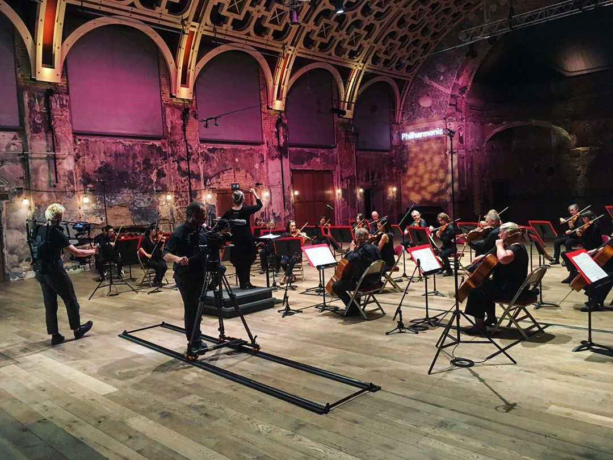
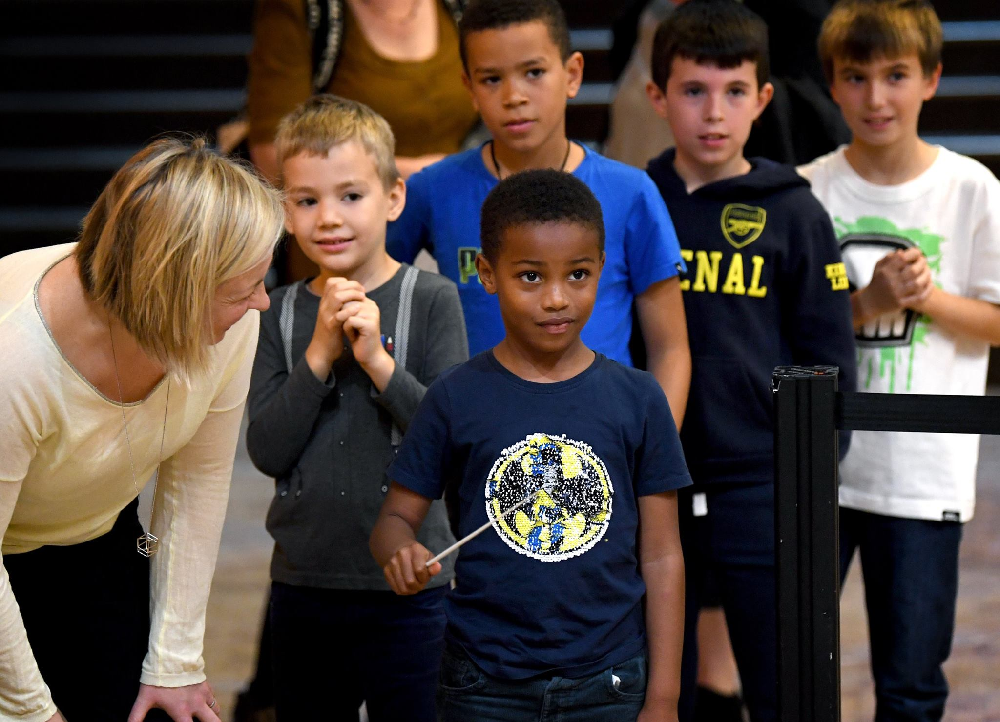

Holly Mathieson, coder and conductor. Photo Courtesy of Martin Stewart, 2019
I'm an orchestral conductor working in the UK, Canada and NZ, with an interest in software engineering and the intersection of music
and digital technology, and the possibilities for heightened creativity in real-world and networked spaces.

Holly Mathieson conducting the Philharmonia Orchestra in a filming session during lockdown, 2020.
I'm passionate about smart solutions for a cleaner and fairer world, commissioning new works and skewing society towards seeing
the arts as something to do rather than something to consume.
I'm a maker, a solutions-strategist, and a champion for kindness.

"Holly Mathieson helping a young boy to conduct an LSO musician during the "This is Rattle" Festival (Barbican Centre, 2017)
I started coding in 2020, with self-directed learning through Udemy, Coursera and freecodecamp, along with developing my own projects.
I'm in the Command Shift March 2023 cohort, and ready to kick into another gear!
Qualities
Fervently creative
End-point driven
Avid asker of questions
Hobbies
Professional conductor with international portfolio